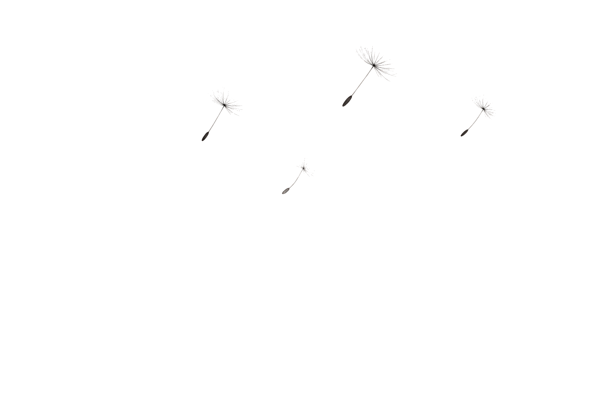
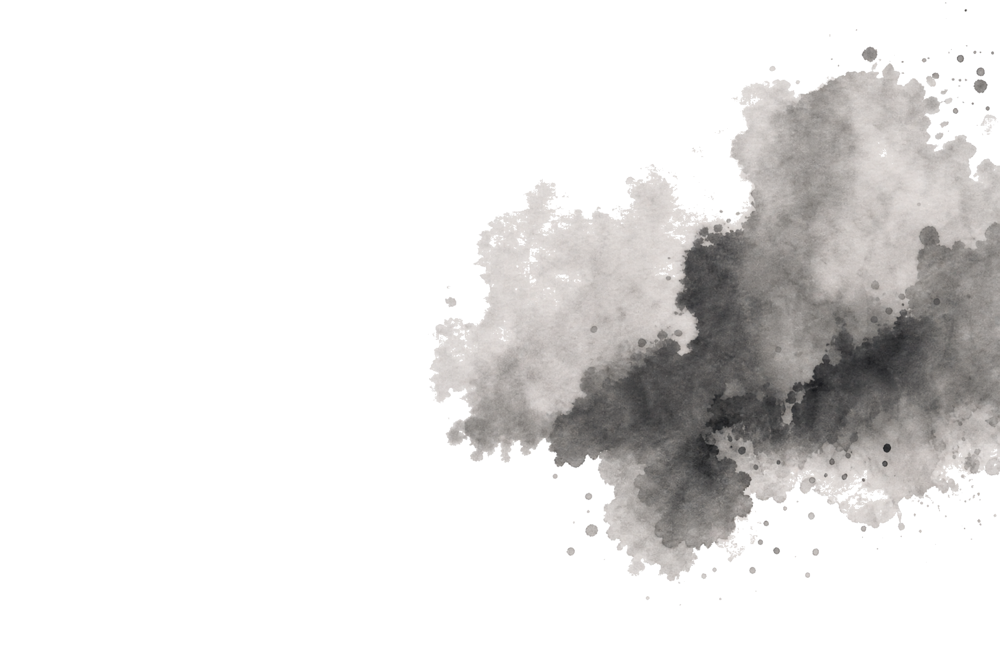
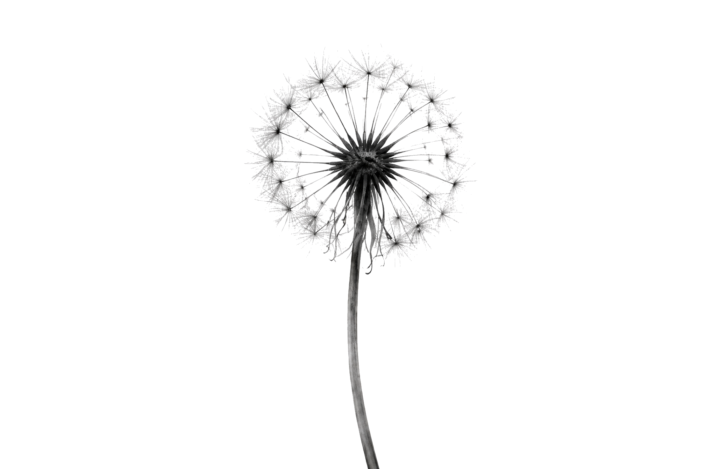
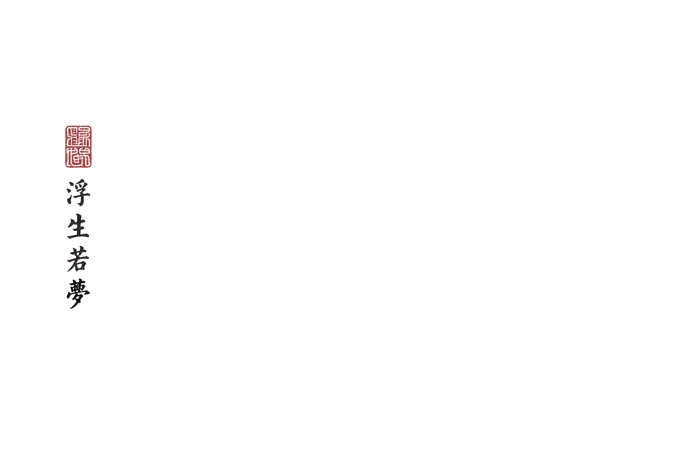
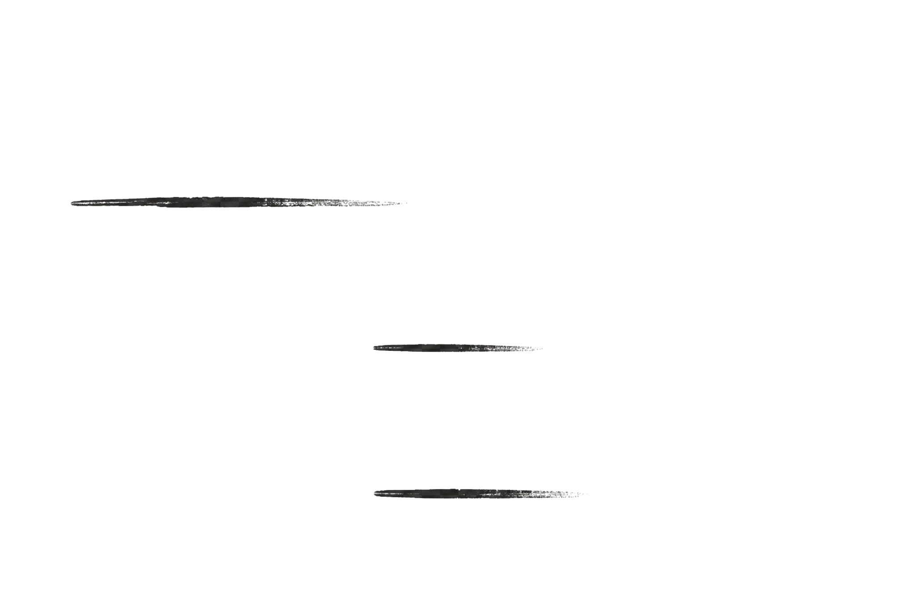

EphemeralAI Lab

Where ideas bloom and drift away
Projects
 Storage foundation
LayerFS
A high-speed, space-efficient filesystem for ephemeral agent workspaces.
Explore LayerFS ↗
Storage foundation
LayerFS
A high-speed, space-efficient filesystem for ephemeral agent workspaces.
Explore LayerFS ↗
 Execution foundation
Ephemeral Sandbox
Isolated, disposable workspaces that let many coding agents run side by side.
Explore the sandbox ↗
Version control, reimagined
Deltagit
A new way to version, branch, and publish work created by agent-native teams.
See the direction ↗
Execution foundation
Ephemeral Sandbox
Isolated, disposable workspaces that let many coding agents run side by side.
Explore the sandbox ↗
Version control, reimagined
Deltagit
A new way to version, branch, and publish work created by agent-native teams.
See the direction ↗

About
Ephemeral AI Lab builds open-source infrastructure for multi-agent systems. We believe agents need a new kind of computing environment: temporary workspaces, durable results, and the ability to scale beyond the limits of a native filesystem.